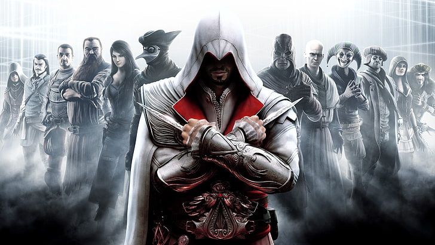
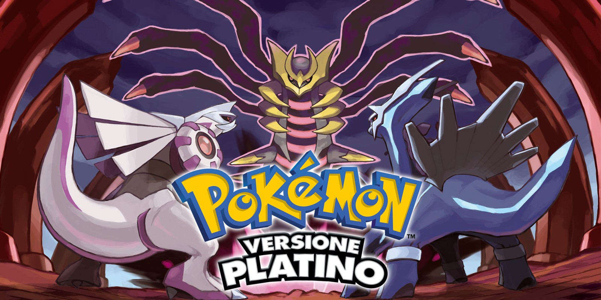
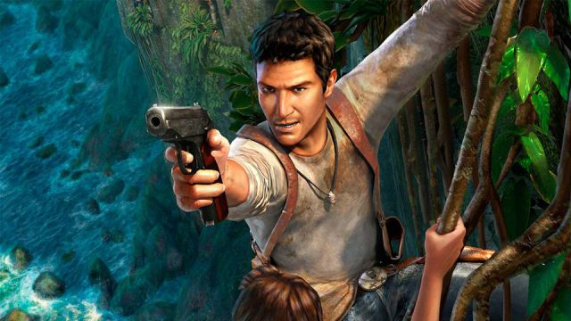

POTREBBERO INTERESSARTI QUESTE AMIIBO
1.
Assasin's creed II
Voto 11
In seguito agli eventi del primo capitolo, Desmond Miles viene salvato dall'Abstergo dall'assassina sotto copertura Lucy Stillman e viene portato in un rifugio dove incontra la sua squadra, composta dallo storico e analista Shaun Hastings e dal tecnico Rebecca Crane. Questi hanno costruito un proprio Animus, che intendono usare per addestrare Desmond come assassino tramite il cosiddetto "effetto osmosi", grazie al quale potrà assimilare rapidamente le abilità del proprio antenato. Desmond rivive quindi i ricordi di Ezio Auditore da Firenze, nato in una nobile famiglia fiorentina nel 1459, in pieno Rinascimento italiano.
Stupenda
2.
Call of duty Black ops II
Voto 9
Call of Duty®: Black Ops 2 supererà le aspettative degli appassionati della serie campione di vendite, proiettando i giocatori in un futuro vicino, la guerra fredda del 21° secolo, dove tecnologia e armamenti si sono uniti per creare una nuova generazione di macchine belliche.
Eccellete

3.
Pokemon Platino
Voto 9
Pokémon versione Platino è un gioco fratello di Pokémon Diamante e Perla ed è il terzo gioco della serie principale della quarta generazione. La mascotte del gioco è Giratina. In Giappone è uscito il 13 settembre 2008, negli USA il 22 marzo 2009 e in Europa il 22 maggio 2009. In questo gioco sono state aggiunte molte novità rispetto a Diamante e Perla.
Mitica
4.
The legend of zelda skyward sword
Voto 7
Nella cronologia della serie, Skyward Sword è un prequel di tutti i videogiochi della saga. Link, il protagonista, è nato e cresciuto a Oltrenuvola, un'isola galleggiante sopra le nuvole. Una leggenda racconta che all'alba dei tempi la Dea Hylia vegliasse sulla Terra, ma Mortipher, un'entità malvagia, attaccò il mondo con i suoi demoni. Per salvare gli umani, la Dea innalzò in cielo Oltrenuvola e altre piccole isole. In seguito sconfisse Mortipher e lo sigillò sulla Terra. Gli abitanti di Oltrenuvola, però, credono che questa sia soltanto una leggenda e ritengono che non esista nulla al di sotto delle nuvole.
Stupenda

5.
Uncharted: Drake's Fortune
Voto 8
Al largo delle coste di Panama, Nathan "Nate" Drake recupera dal fondo dell'oceano la bara dell'esploratore e corsaro inglese, nonché suo antenato, Sir Francis Drake. L'evento è ripreso dalla giornalista Elena Fisher, la cui compagnia ha finanziato l'impresa per avere un buon documentario. Nella bara però non sono presenti le spoglie di Sir Francis, ma solo il suo diario (la cui ultima pagina è stata strappata) contenente la locazione di El Dorado. In quel momento, i due vengono attaccati da dei pirati, ma in loro soccorso arriva Victor Sullivan detto "Sully", amico di Nathan.
Stupenda
